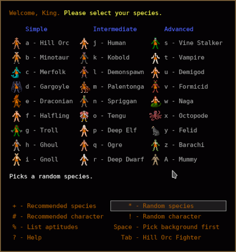
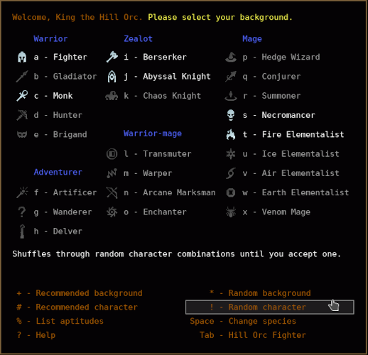
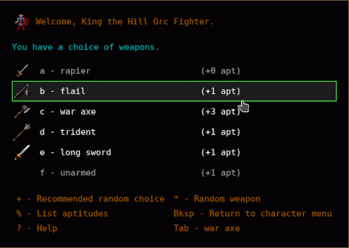
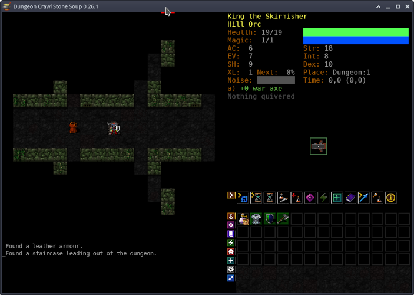

Dungeon Crawl Быстрый старт
Перевод официального руководства с некоторыми дополнениями.
Итак, вы хотите сразу же начать играть в Dungeon Crawl, не вникая в руководство? Прочтите это небольшое руководство по Dungeon Crawl и вы получите необходимые для начала знания.
Я предлагаю распечатать это руководство и следовать ему, во время ваших первых игр.
Вы можете дважды нажать ?, чтобы посмотреть список команд. Вам также следует
попробовать обучающий режим; это займет всего несколько минут.
Когда у вас будет больше времени, вы можете прочитать полное руководство для более подробной информации.
Введение в Dungeon Crawl
Crawl - это большая и очень случайная игра об исследовании подземелий в фэнтезийном мире магии и повсеместного насилия. Ваша задача - отправиться в глубины подземелья (которое меняется каждый раз, когда вы играете) и забрать оттуда сферу Zot.
Crawl - это ролевая игра rogue-like, одна из потомков Rogue. Её
графика проста, но очень информативна и предназначена для понимания ситуации с первого
взгляда, а управление осуществляется в основном с помощью команд, вводимых одним нажатием.
Начало
После запуска игры, вас встретит сообщение с просьбой ввести имя персонажа. Не тратьте на это слишком много времени, так как ваш первый персонаж долго не продержится (извините, но это правда).
Далее вам предоставляется меню расы и происхождения, из которых вы можете выбрать.
Холмовой-орк (hill orc), минотавр (minotaur) или тролль боец (troll fighter) - хорошый выбор для начала.
Эльфы (elves) довольно хрупкие, люди (human) довольно средние во всем, а более странные виды в основном
слишком сложны для начинающих игроков.


После выбора расы и происхождения, вам может быть предоставлен выбор оружия. Предлагаю выбрать топор (топоры - это весело).

Теперь вы в игре. Экран игры состоит из нескольких частей:
- Карта занимает верхнюю левую часть экрана. В самом его центре находитесь вы.
- Окно сообщений - часть экрана под картой. Сообщения описывают события возникающие время от времени, также там появляются вопросы если вам нужно сделать выбор.
- Область статистики (справа вверху) содержит различные индикаторы ваше здоровье и способности.
- Справа по центру находится миникарта.
- Справа внизу инвентарь и различные контрольные кнопки.

Путешествие по подземелью
Попробуйте пройтись, используя цифровую клавиатуру (для этого нужно включить numlock) или
клавиши (hjklyubn). Нажатие o для активации режима автоматического исследования, персонаж будет
двигаться, пока не появится враг, или не произойдет какое-либо другое значимое событие (например, нахождение лестницы).
Если вы хотите знать, что представляет собой определенный персонаж на экране, вы можете
использовать клавишу x (исследовать), чтобы получить краткое описание, а затем нажмите v, чтобы получить
больше информации. Используйте клавиши O, C, чтобы открывать или закрывать двери, а клавиши
< (вверх) и > (вниз) для спуска и подъема по лестнице.
Подземелье становится опаснее (но интереснее!) по мере того, как вы спускаетесь. если вы
заблудились, вы можете получить доступ к карте всего уровня, на котором вы находитесь, с помощью клавиши X,
которая использует весь экран.
Предметы
Путешествуя по подземелью некоторое время, вы, несомненно наткнетесь на некоторые предметы,
которые валяются на полу (вы также можете встретить некоторых монстров; для помощи в разборе
с ними переходите в раздел Монстры). Вы можете подбирать предметы с помощью клавиши g или ,.
Выбросить предметы из инвентаря можно с помощью клавиши d. Клавиша i (инвентарь) показывает вам,
что вы несете. При изучении вашего инвентаря, нажмите клавишу любого предмета, чтобы увидеть
дополнительную информацию о нем и выполнить доступные с предметом действия.
Есть несколько различных типов предметов:
- Оружие. Используйте клавишу
wчтобы взять оружие в руки. Некоторое оружие проклято и не может быть снято без использования магии. - Броня. Надеть или снять броню можно с помощью клавиши
W. Более тяжелые доспехи обеспечивают большую защиту, но могут ограничивать вашу способность сражаться, уклоняться и произносить заклинания. Броня также может быть проклята. - Боеприпасы. Бросать можно с помощью клавишь
fиF. Камни, томагавки и копья предназначены для метания вручную; Для использования других боеприпасов необходима соответствующая пусковая установка (например, стрелы предназначены только для лука). - Жезлы, Свитки и Зелья могут быть очень ценны, но имеют ограниченное применение (свитки и зелья можно использовать только один раз каждый жезл содержит только определенное количество зарядов). По механике игры, вы не будете знать, что делает свиток или зелье; будет описан только его вид. Но как только вы использовали, например лечебное зелье, в будущем вы будете знать все лечебные зелья.
- Кольца и Амулеты обеспечивают различные полезные эффекты.
Они надеваются с помощью клавиши
Pи могут быть удалены с помощью клавишиR. Также они могут быть прокляты. - Деньги можно использовать для покупки вещей в магазинах.
Есть еще несколько типов предметов, но вы откроете их для себя во время игры.
Монстры
Вы также столкнетесь с монстрами. Вы можете атаковать монстра, пытаясь переместиться на квадрат,
который он занимает. Нажатие Tab автоматически переместит вас к ближайшему монстру и атакует его.
Когда вы ранены, вы теряете очки здоровья (зеленая полоса в верхней части статистики). Они возвращаются постепенно с течением времени в результате естественного процесса выздоровления. Если вы потеряете все свое здоровье, вы умрете.
Чтобы выжить, вам нужно будет разработать несколько основных тактик:
- Никогда не сражайтесь более чем с одним монстром, если это возможно. Старайтесь драться в коридоре, так другие монстры не смогут вас окружить и вы будете драться один на один.
- Если вы тяжело ранены, вы можете убежать от монстров, чтобы выиграть время. Попробуйте оторваться от них в коридорах или в крайнем случае, найти место, где вы можете бегать кругами, чтобы лечиться, пока монстр преследует вас.
- Не забывайте использовать метательные снаряды, прежде чем вступать в ближний бой с монстрами.
- Отдыхайте между битвами. Команды
s,.или5на дополнительной клавиатуре заставляют вас отдыхайть один ход, при нажатииshift-5вы отдыхаете более длительное время пока полностью не вылечитесь. - Знайте когда нужно убегать от монстров с которыми вы не справляетесь - это важно! Часто бывает разумно пропустить опасный уровень. Но не переусердствуйте.
Смерть
Вскоре вы, вероятно, умрете.
Смерть в Dungeon Crawl необратима; нельзя просто перезагрузить сохраненную игру и запустить
снова с того места, где вы остановились. Команда S существует только для того, чтобы вы могли выйти
из игры и вернуться к ней позже. Выход Ctrl-Q позволяет вам совершить убийство своего персонажа.
Ну вот и все для краткого руководства. Это должно помочь вам в первые несколько игр, но Dungeon Crawl чрезвычайно (некоторые сказали бы чрезмерно) сложная игра и не может быть адекватно описана в таком коротком руководстве. Итак, когда вы почувствуете, что готовы начать играть с магией, навыками и религиями, просмотрите полное руководство.
Удачной игры!